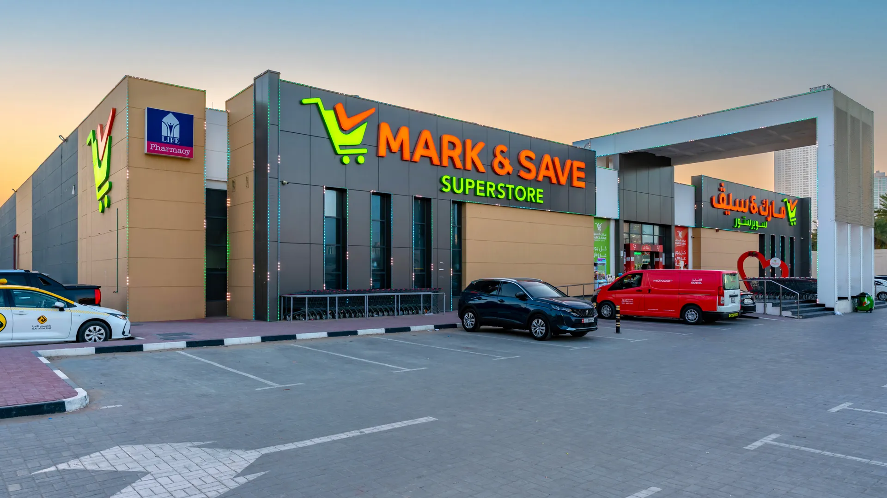

Mark & Save, Rashdiya
Rising as a hallmark of architectural vision and structural grace, Mark and Save emerges across three strategic landscapes in Ajman, redefining the city’s retail horizon. The crown jewel of these is a monumental 25,000 sqm masterpiece, a triumph of design where form and function dance in perfect harmony. Across its soaring Ground and First floors, the layout invites a sense of fluid exploration, while two dedicated levels of integrated parking and a vast roof structure complete a silhouette of modern grandeur. From the initial blueprint to the final finishing touch, this flagship destination stands as a testament to meticulous planning and superior craftsmanship, offering a sprawling, multi-level lifestyle mall that elevates the shopping experience to an art form.
Info
- Location: Rashdiya, Ajman
- Structure: Ground + First + 2 Parking + Roof
- Flagship built-up area: 25,000 sqm

